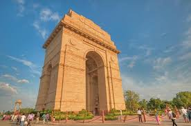
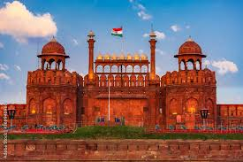

Atractions of Delhi
India Gate

The India Gate (formerly known as All India War Memorial) is a war memorial located near the Kartavya path. It stands as a memorial to 74,187 soldiers of the Indian Army who died between 1914 and 1921 in the First World War, in France, Flanders, Mesopotamia, Persia, East Africa, Gallipoli and elsewhere in the Near and the Far East, and the Third Anglo-Afghan War. It is often compared to the Arc de Triomphe in Paris, and the Gateway of India in Mumbai.
Redfort
The Red Fort or Lal Qila (Hindustani: [laːl qiːlaː]) is a historic fort in the Old Delhi neighbourhood of Delhi, India, that historically served as the main residence of the Mughal emperors. Emperor Shah Jahan commissioned construction of the Red Fort on 12 May 1639, when he decided to shift his capital from Agra to Delhi. Originally red and white, its design is credited to architect Ustad Ahmad Lahori, who also constructed the Taj Mahal.
Lotus Temple

The Lotus Temple, located in New Delhi, India, is a Baháʼí House of Worship that was dedicated in December 1986. Notable for its lotus-like shape, it has become a prominent attraction in the city. The building is composed of 27 free-standing marble-clad "petals" arranged in clusters of three to form nine sides, with nine doors opening onto a central hall with a height of slightly over 34 metres and a capacity of 1,300 people. The Lotus Temple has won numerous architectural awards and has been featured in many newspaper and magazine articles.